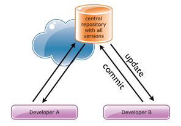

Your browser doesn't support the features required by impress.js, so you are presented with a simplified version of this presentation.
For the best experience please use the latest Chrome, Safari or Firefox browser.
Starting With
Git & Github
About Me
Anish Joshi
What will you learn today
- VCS
- Basics of Git
- Basics of Github
- Github Pages
Do you need Version Controls?
Bruteforce Version Control
Rename and Backup
- foo.php
- foo_20141101.php
- foo_final.php
- foo_realfinal.php
- foo_finalfinal.php
Version
Control
System
keep track of
changes of file & folder
who = author name
when = date of commit
why = commit message
Central
Subversion, CVS

Distributed
Git, Mercurial

Free and OpenSource
Git distributed version control system
- Web Based Hosted Git Repository
- access control, wiki, basic task management
- Free for Public and Pay for Private
- You can clone any public repository, follow projects and developers, post comment etc.
- It's becoming facebook for developers.
Enough Talking!
Lets Begin >
Step 1 : Create or Get a Repository
Creating a new repository
$ git init
To create a git repository from exting directory of file
Or, clone remote repository
$ git clone https://github.com/git/git.git
Get a copy of remote repository
Step 2 : Making some changes and add to stage
Create a new file - newfile.txt
$ git status
file status "Untracked files present"
$ git add newfile.txt
Adds files to stating area
$ git status
file status "Changes to be committed"
Step 3 : Lets commit our changes
$ git commit -m "Added newfile.txt"
$ "Added newfile.txt
1 file changed, 1 insertion(+)
create mode 100644 newfile.txt"
Records a snapshot of added file (Staging area).
Step 4 : Lets review changes our changes
Open newfile.txt and modify content and save.
$ git status
modified: newfile.txt
$ git diff
show the difference between previous and new content
now, repeat git add . and git commit -m "modified"
Step 4 : Working with remote repository.
Login or Create an Github Account https://github.com/
Create new Repository https://github.com/new
Repository name : gittest (can be anything)
Note : Don't check "Initialize this repository with a README"
Step 5 : Working with remote repository.
$ git remote add origin https://github.com/anishjoshi/gittest.git
Add remote repository location. Only once normally.
$ git push origin master (intital default branch name)
Push latest changes to remote repository.
Step 5 : Working with remote repository.
$ git pull origin master
Pull latest changes to remote location of master branch. Sync between muliple developer
$ git fetch
Download new branch and data informations from remote repository
Step 5 : Branching and Merging.
Branch
A branch represents an independent line of development
Merge
The git merge command lets you take the independent lines of development created by git branch and integrate them into a single branch.
Step 5 : Branching and Merging.
$ git branch
List all of the branches in your repository.
$ git branch branch_name
Create a new branch. This does not check out the new branch.
Step 5 : Branching and Merging.
$ git checkout -b branch_name
Create a new branch and switch the branch.
$ git checkout branch_name
Switch between branch.
Step 5 : Branching and Merging.
$ git merge branch_name
Merge the branch in the existing branch

Step 5 : Git Branch Modeling.
Step 5 : Demo Github
- Branch Creation
- Pull Request
- WIKI
- Basic Task Management and usages of Labels
- Github Pages
We are hiring! Do wanna Join Us?
Use a spacebar or arrow keys to navigate